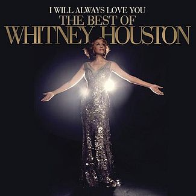
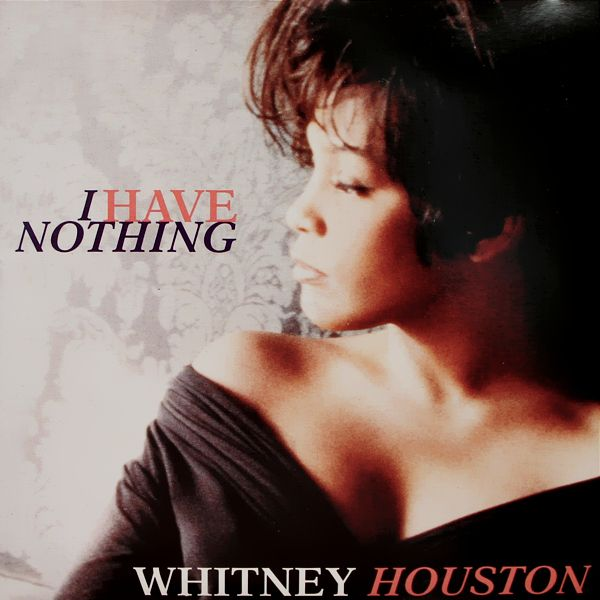

Whitney Houston
Whitney Houston - Welcome Heroes 1[1] |
| Born | Whitney Elizabeth Houston August 9, 1963 Newark, New Jersey, U.S. |
| Nationality | American |
| Occupation | Singer, actress, film producer, record producer, model |
| Years active | 1977 - 2012 |
In 2009, Guinness World Records cited her as the most awarded female act of all time. Houston is one of pop music's best-selling music artists of all-time, with an estimated 170–200 million records sold worldwide. She released seven studio albums and two soundtrack albums, all of which have diamond, multi-platinum, platinum or gold certification.
Houston is the only artist to chart seven consecutive No. 1 Billboard Hot 100 hits. She is the second artist and the only woman to have two number-one Billboard 200 Album awards on the Billboard magazine year-endcharts. Houston's debut album, Whitney Houston (1985), became the best-selling debut album by a woman in history. Rolling Stone named it the best album of 1986, and ranked it at number 254 on the magazine's list of the 500 Greatest Albums of All Time. Her second studio album, Whitney (1987), became the first album by a woman to debut at number one on the Billboard 200 albums chart.
"I Will Always Love You", won the Grammy Award for Record of the Year and became the best-selling single by a woman in music history. With the album, Houston became the first act to sell more than a million copies of an album within a single week. The album makes her the top female act in the top 10 list of the best-selling albums of all time, at number four. Houston continued to star in movies and contribute to their soundtracks, including the films Waiting to Exhale (1995) and The Preacher's Wife (1996). The Preacher's Wife soundtrack became the best-selling gospel album in history.
On February 11, 2012, Houston was found dead in her guest room at the Beverly Hilton, in Beverly Hills, California. The official coroner's report showed that she had accidentally drowned in the bathtub, with heart disease and cocaine use listed as contributing factors.[2]

I Will Always Love You: The Best of Whitney Houston (Album Cover)[3]
If I should stay
I would only be in your way
So I'll go but I know
I'll think of you every step of the way
And I... will always love you, ooh
Will always love you
You
My darling, you...
Mmm-mm
Bittersweet memories –
That is all I'm taking with me.
So good-bye.
Please don't cry:
We both know I'm not what you, you need
And I... will always love you
I... will always love you
You, ooh
[Instrumental / Sax solo]
I hope life treats you kind
And I hope you have all you've dreamed of
And I wish you joy and happiness
But above all this I wish you love
And I... will always love you
I will always love you
I will always love you
I will always love you
I will always love you
I, I will always love you.
You.
Darling, I love you.
I'll always...
I'll always love you.
Ooh
Ooh
Lyrics of I Will Always Love You (Whitney Houston) by AZLyrics[4]


I Have Nothing - Whitney Houston (Single Cover)[5]
Share my life, take me for what I am
'Cause I'll never change all my colours for you
Take my love, I'll never ask for too much
Just all that you are and everything that you do
I don't really need to look very much further
I don't wanna have to go where you don't follow
I won't hold it back again, this passion inside
Can't run from myself
There's nowhere to hide
Don't make me close one more door
I don't wanna hurt anymore
Stay in my arms if you dare
Or must I imagine you there
Don't walk away from me...
I have nothing, nothing, nothing
If I don't have you, you, you, you, you.
You see through right to the heart of me
You break down my walls with the strength of your love
I never knew love like I've known it with you
Will a memory survive, one I can hold on to
I don't really need to look very much further
I don't wanna have to go where you don't follow
I won't hold it back again, this passion inside
I can't run from myself
There's nowhere to hide
Your love I'll remember forever
Don't make me close one more door
I don't wanna hurt anymore
Stay in my arms if you dare
Or must I imagine you there
Don't walk away from me...
I have nothing, nothing, nothing...
Don't make me close one more door
I don't wanna hurt anymore
Stay in my arms if you dare
Or must I imagine you there
Don't walk away from me, no.
Don't walk away from me
Don't you dare walk away from me
I have nothing, nothing, nothing
If I don't have you, you,
If I don't have you, oh, ooh, ooh.
Lyrics of I Have Nothing (Whitney Houston) by AZLyrics[6]
How Will I Know - Whitney Houston (Single Cover)[7]
There's a boy I know, he's the one I dream of
Looks into my eyes, takes me to the clouds above
Ooh I lose control, can't seem to get enough
When I wake from dreaming, tell me is it really love
[Chorus:]
How will I know (Don't trust your feelings)
How will I know
How will I know (Love can be deceiving)
How will I know
How will I know if he really loves me
I say a prayer with every heart beat
I fall in love whenever we meet
I'm asking you what you know about these things
How will I know if he's thinking of me
I try to phone but I'm too shy (can't speak)
Falling in love is all bitter sweet
This love is strong why do I feel weak
Oh, wake me, I'm shaking, wish I had you near me now
Said there's no mistaking, what I feel is really love
[chorus]
If he loves me, if he loves me not [X3]
Lyrics of How Will I Know (Whitney Houston) by AZLyrics[8]